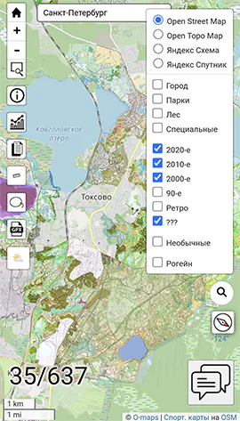
Каждый из разделов с картами (Санкт-Петербург, Москва, Башкортостан, Псков, Рязань, Самара, Белград и все регионы вместе) представляет из себя картографическую подложку с "привязанными" к ней изображениями спортивных карт. Щелчком мыши по любой карте можно вызвать появление всплывающего окна с подробной информацией о ней.Все карты организованы в группы (слои) по типу и по году издания. Все такие слои можно включать/выключать независимо друг от друга.
Помимо собственно карт на экране расположено множество разнообразных элементов управления - кнопки, списки выбора, ссылки и пр.
В левой нижней части экрана расположен счётчик показываемых карт.
Подложка
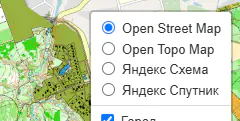
Самый "нижний" слой на экране - это картографическая подложка. Для неё могут использоваться различные источники:- Open Street Map (OSM)
- Open Topo Map (OSM)
- Яндекс карты (Схема)
- Яндекс карты (Спутник)
Слои карт
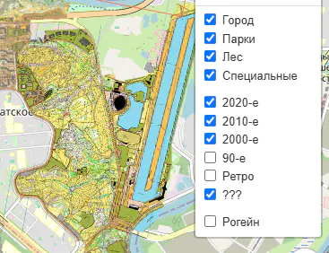
Спортивные карты по типу бывают:- Городские (CITY)
- Парковые (PARK)
- Лесные
- Специальные
- Рогейн (ROGAINE)
- Необычные (FUN)
Спортивные карты по году издания делятся на десятилетия:
- 2020-е
- 2010-е
- 2000-е
- 90-е
- Ретро
- ???
Слои (типы) карт можно включать/выключать независимо друг от друга с помощью галочек (чекбоксов) в правой части экрана. Десятилетия относятся только к спортивным картам: рогейнерские и необычные карты показываются независимо от года.
Помимо слоёв с картами, в том же переключателе есть дополнительные слои: 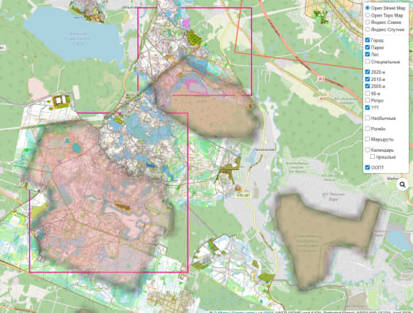 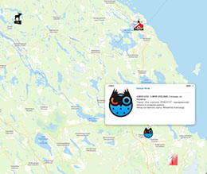
- Маршруты - треки из раздела «Маршруты»;
- Календарь - маркеры стартов из календаря; вложенная галочка «прошлые» добавляет уже прошедшие старты;
- POI - полезные места: клубы, центры многодневок и т.п.;
- ООПТ - границы особо охраняемых природных территорий.
При мелком масштабе (когда на экране много карт) изображения карт заменяются оливковыми прямоугольниками по их границам - так страница работает быстрее. Карты районов, закрытых для тренировок и соревнований, обведены розовой рамкой.
Всплывающее окошко информации о карте
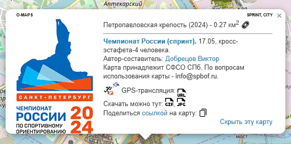
Каталог может хранить множество разной информации о каждой карте:- Название
- Год
- Координаты углов карты для "привязки"
- Имя файла для предварительного просмотра
- Имена файлов изображений карты в высоком (ну или в не очень высоком) качестве
- Список авторов
- Список владельцев
- Список типов (слоёв)
- Указание на многодневку или серию соревнований
- Ссылка на GPS-трансляцию
- Логотип
- Любая дополнительная информация
Помимо всего перечисленного, во всплывающем окошке информации о карте показывается следующие элементы:
- Площадь карты
- Ссылка на карту
- Ссылка на страничку информации о карте
- Кнопка "Скрыть эту карту"
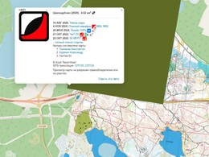
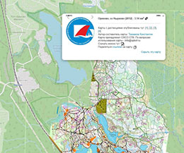
Список соревнований, проводившихся по этой карте, со ссылками на результаты и страницы стартов- Ссылки на сторонние публикации карты (как правило, с дистанциями)
Площадь карты может быть или заранее прописана в каталоге, или вычислена "на лету". Вычисление происходит на основе координат углов карты. Поскольку у нас нет никакой информации о том, какую часть листа бумаги занимает собственно карта, то используется такое условное правило - (площадь листа * 70%).
"Ссылка на карту" - это ссылка на O-Maps, который будет открыт именно на этой карте.
Страничка информации о карте во многом дублирует это окошко информации, разве что в другом дизайне. Но у неё есть постоянный адрес, который можно кому-то послать или где-то упомянуть, если это вдруг будет нужно. Найти её можно на "скрепке" справа от названия и площади карты.
Кнопка "Скрыть эту карту" может быть очень полезна, когда в одном месте расположено множество карт, перекрывающихся друг с другом. Т.о. можно добраться до самых "глубоко закопанных" карт.
Элементы управления
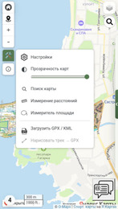 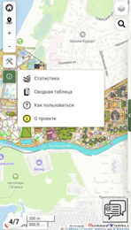
Навигация по сайту
Кнопка «Домой» ведёт на главную страницу. Глобальное меню ☰ позволяет перейти в любой раздел сайта: на страницы других регионов, в календари, к стартам, таблицам и т.д. (см. описание меню).
Местоположение и масштаб
Кнопка "Моё местоположение" сдвинет карту в то место, где Вы находитесь. Но только, если определение местоположения разрешено в настройках Вашего браузера.
Кнопки "+" и "-" ступенчато увеличивают и уменьшают масштаб карты. Менять масштаб можно также колесом мыши или жестом на телефоне.
Инструменты
- Настройки - открывает контекстное меню (удобно на телефоне, где долгий тап не всегда срабатывает).
- Прозрачность карт - ползунок, меняющий прозрачность изображений карт от 0 до 100% и оставляющий подложку неизменной.
- Поиск карты - позволяет быстро найти карту по её названию, имени файла, году издания или даже по любому слову, встречающемуся в её описании.
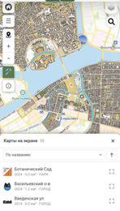
Карты на экране - открывает список всех карт, попадающих в текущий экран. Удобно, когда в одном месте друг на друга наложены десятки карт. Список перестраивается при каждом перемещении и изменении масштаба. Его можно сортировать по году, названию или площади и менять направление сортировки. Щелчок по строке выводит карту на передний план и сдвигает к ней экран, а кнопка-рамка справа вписывает карту в экран целиком. Список можно держать открытым одновременно с другими инструментами.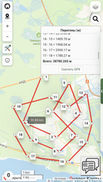
Расстояния → GPX - измеряет длину дистанции или любой ломаной на местности. Нарисованную ломаную можно сохранить в GPX-файл кнопкой «Скачать GPX» в окошке с длинами перегонов - так можно, например, нарисовать маршрут для часов или навигатора.- Измерение площади - измеряет площадь произвольного участка местности с помощью инструмента, похожего на лассо.
- Загрузка GPX / KML - накладывает на карту трек из файла формата GPX, KML или GeoJSON.
Информация
- Статистика - страница статистики для текущего региона.
- Сводная таблица - сводная таблица карт текущего региона.
- Как пользоваться - эта справка.
- О проекте - окно с краткой информацией о проекте: его общее описание, задачи, структура, способы поддержки, а также благодарности и обращения к авторам и владельцам карт.
Прочее
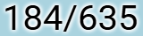
Счётчик карт показывает число карт, поместившихся в экран и общее их количество. Если эти два числа совпадают, то показывается только одно.Большая кнопка "Группа поддержки" в правом-нижнем углу экрана открывает телеграм-чат проекта. Там Вы можете узнать все связанные с ним новости и задать любые возникшие у Вас вопросы.
Всплывающее (контекстное) меню
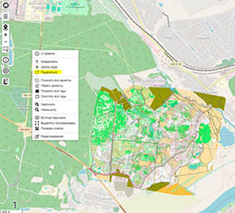
Пункты меню:
- "О проекте" - окно с краткой информацией о проекте.
- "Координаты" - копирует координаты точки появления меню в буфер обмена.
- "Центр сюда" - перемещает карту в точку появления меню.
- "Поделиться" - копирует в буфер обмена ссылку на текущее место с учётом контекста (фильтров).
- "Показать все ориенты" - включает слои всех типов спортивных карт.
- "Убрать ориенты" - выключает все слои спортивных карт.
- "Показать все годы" - включает все слои временнЫх интервалов (2020-е, 2010-е итд).
- "Очистить все годы" - выключает все слои временнЫх интервалов.
- "Увеличить" - приближает карту.
- "Уменьшить" - отдаляет карту.
- "Всплыв.подсказки" - включает/выключает автоматический показ всплывающего окошка с информацией о карте при наведении курсора на неё.
- "Выделять полноразмеры" - включает/выключает режим, при котором карты, у которых есть качественный джипег, выделяются специальным пунктирным обрамлением.
- "Редактирование" - выключает/выключает режим редактирования (привязки карт).
Параметры запуска
Страницы с картами или со сводными таблицами карт любого из регионов (СПб, Москва, Башкортостан, Псков, Рязань, Самара, Белград, все вместе) можно открыть в специальном режиме путём добавления специальных параметров к адресу страницы. Ниже - таблица с описанием возможных параметров:
| Параметр | Описание | Пример использования |
|---|---|---|
| map | Параметр map в адресе указывает на конкретную карту. O-Maps откроется с заданной картой в центре. | https://o-maps.spb.ru/spb.html?map=petropavlovka_2024 |
| onlymap | Параметр onlymap подобен предыдущему, но показана будет ТОЛЬКО выбранная карта. Все остальные не будут загружены. | https://o-maps.spb.ru/spb.html?onlymap=petropavlovka_2024 |
| x, y, zoom | Параметры x, y и zoom задают центральную точку и степень приближения карты (9 - 16). | https://o-maps.spb.ru/moscow.html?x=55.75163&y=37.61688&zoom=15 |
| background | Параметр background определяет фоновую подложку карты. Возможные значения: osm (Open Street Map), topo (Open Topo Map), yandex (Яндекс-схема) и satellite (Яндекс-спутник). | https://o-maps.spb.ru/moscow.html?background=satellite |
| no-buttons | Если присутствует параметр no-buttons, с карты будут убраны все "лишние" элементы управления. | https://o-maps.spb.ru/spb.html?no-buttons |
| embedded | Это "усиленный" вариант предыдущего параметра. С карты будут убраны все элементы управления, кроме кнопок зуммирования. Он очень удобен при
интеграции карты O-Maps на страницу стороннего сайта. Дополнительный нюанс - в этом режиме в качестве подложки используются Яндекс-карты вместо OSM (т.к. OSM бывает заблокирован). |
https://o-maps.spb.ru/spb.html?embedded |
| author | Параметр author указывает, что будут загружены карты лишь одного указанного автора. Список всех авторов можно посмотреть тут. | https://o-maps.spb.ru/all.html?author=TKMKV_K |
| owner | Параметр owner указывает, что будут загружены карты лишь одного указанного правообладателя. Их полный список можно посмотреть тут | https://o-maps.spb.ru/moscow.html?owner=O_FRZNO |
| type | При наличии параметра type будут загружены карты лишь одного указанного типа (PARK, ROGAINE, SPRINT, CITY, RELIEF, WINTER, VELO, FUN). | https://o-maps.spb.ru/sheet-serbia.html?type=PARK |
| start | При наличии параметра start будут загружены карты лишь одной указанной многодневки (серии стартов). Список всех стартов можно посмотреть тут. | https://o-maps.spb.ru/sheet-spb.html?start=KKP |
| only-wo-author | При наличии параметра only-wo-author будут загружены лишь те карты, автор-составитель которых неизвестен. | https://o-maps.spb.ru/all.html?only-wo-author |
| restricted | При наличии параметра restricted будут загружены лишь те карты, район которых закрыт в данный момент для тренировок и соревнований. | https://o-maps.spb.ru/all.html?restricted |
| ocad | При наличии параметра ocad будут загружены лишь те карты, которые опубликованы вместе с OCAD-файлом. | https://o-maps.spb.ru/all.html?ocad |
| retro | При наличии параметра retro будут загружены лишь ретро-карты (старше 1990 года) и автоматически включается слой ретро-карт. | https://o-maps.spb.ru/spb.html?retro |
| poi | При наличии параметра poi автоматически включается слой информационных объектов (POI). | https://o-maps.spb.ru/spb.html?poi |
| oopt | При наличии параметра oopt автоматически включается слой ООПТ (особо охраняемых природных территорий). | https://o-maps.spb.ru/spb.html?oopt |
| all-years | При наличии параметра all-years включаются слои всех десятилетий, в том числе 90-е и ретро, которые по умолчанию выключены. | https://o-maps.spb.ru/spb.html?all-years |
| planner | Только карты с дистанциями указанного планировщика. Коды планировщиков - тут. | https://o-maps.spb.ru/sheet-spb.html?planner=BKTV |
| region | Только карты указанного региона за пределами основных регионов каталога (например, N_NOVGOROD, KRASNODAR, PERM, KARELIA). Удобно на общей странице и в общей таблице. | https://o-maps.spb.ru/sheet-all.html?region=N_NOVGOROD |
| only-wo-full | Только карты, для которых нет полноразмерного изображения. | https://o-maps.spb.ru/sheet-spb.html?only-wo-full |
| wo-author | Показываются все карты, но карты без известного автора выделяются пунктирной рамкой. | https://o-maps.spb.ru/spb.html?wo-author |
| orders | Только районы из реестра запросов на рисовку карт. | https://o-maps.spb.ru/all.html?orders |
| calendar | Включает слой календаря. Значение параметра задаёт вид стартов (ORIENT, ROGAINE, SKI, VELO...), как в календаре. | https://o-maps.spb.ru/spb.html?calendar=ROGAINE |
| tracks | Включает слой маршрутов. | https://o-maps.spb.ru/spb.html?tracks |
| q | Для сводных таблиц - строка поиска, которая будет сразу применена к таблице. | https://o-maps.spb.ru/sheet-all.html?q=крестовский |
Параметры страницы маршрутов описаны в разделе «Маршруты», календарей - в разделе «Календари».
Практически все параметры можно комбинировать (использовать одновременно). Например, такой адрес https://o-maps.spb.ru/all.html?author=TKMKV_K&x=59.99791&y=30.26149&zoom=13&type=PARK&embedded соответствует O-Maps-странице всех регионов вместе, на которую будут загружены только парковые карты Константина Токмакова, причём указаны конкретные точка позиционирования и степень приближения, а также включён режим embedded.